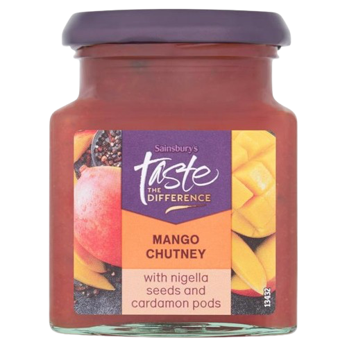

![[Mate's Name]](assets/IMG_8473.png)
Memo
Sabahları iş adamı, öğlen teniste veya kızlarla datede, akşamları ise DJ. Yakında Londra'da en sevdiğiniz klüpde DJ'lik yapmaya geliyor. Ona sakın uzun adam hakkında soru sormayin, sinirlenebilir!
Links
🎧 Soundcloud 🎵 Spotify 📷 Instagram (Kızlar DM!) 💼 LinkedIn 🔥 OnlyFansMemo'nun Tarifi
- 1 Mango chutney (Sainsbury's)
- 500 gr tavuk göğsü
- 300 gr un
- 6 yumurta
- 200 gr Panko ekmek kırıntısı
Satılık İlanı

Kullanılmış ama karakter dolu bir koltuk. Memo'nun 43 saatini geçirdiği bu efsane parça, artık yeni bir yuva arıyor.
Fiyat: 1000 TL (ama pazarlık sünnettir)